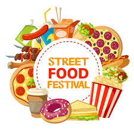

street food lovers
"Mouthwatering goodness.”
“For the love of food.”
“Flavor explosion!"
"Mouthwatering goodness.”
“For the love of food.”
“Flavor explosion!"
Food variety means different types of foods from the entire range of food groups like vegetables, fruit, cereals, meat, fish, and dairy products.
These culinary traditions are renowned for their distinct flavors, exceptional ingredients, and rich cultural heritage.
“Food is our love language.”
“Life's too short to eat bad food.”
“First, we eat. Then, we do everything else.”
Food culture is the collective habits, rituals, beliefs, values, lifestyle, and practices around producing, procuring, and intaking food